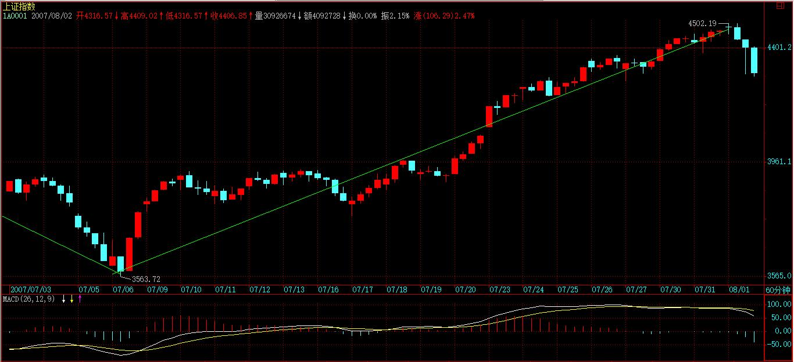

(2007-07-30 22:42:05)
因为要画图要浪费时间，下一课再说有关线段的问题。
今天，说一些宏观点的东西，说说主力资金的食物链。
市场每一时刻的走势，都由当下的合力构成，如果1亿人参加的市场，每一分力都是相等的、都是独立的，那么市场的整个运转和现实的情况，当然有所不同。现实的情况是，有些分力是特别巨大于其他的分力，在这种情况下，对合力的分析，不能脱离对这些特别巨大分力的分析。
如果现实的系统中这种特别巨大的分力只有一个，其他分力与之相比都可以忽略不算，那么市场的所谓合力，就与这分力基本无异了。例如，在那些控盘程度极端高的股票中，就往往呈现这种情况。而这种一个分力远大于其他分力的系统，其稳定性是会产生突变的。
关于个股的情况，以后会说到，这里先说说关于大盘合力与分力的关系。【韶山映山红】个股的合力与分力的关系在哪里？★】
有一种很流行却纯粹出于想象的说法，是关于所谓市场主力资金的。
在这种流行的谬误中，似乎市场中的主力只有一拨人，他们控制着市场的走势，画着每天大盘的分时图中每分每秒。而事实上，这种所谓的主力，从来没存在过。
市场从来都分裂着不同的利益集团，所谓的主力资金，从来都是分派别的，各派别之间，会有联手，会有默契，但也有暗算、互相拆台等等，黄雀、螳螂、蝉的游戏也一点都不新鲜。
主力资金层面的运作，当然也不是单纯的技术分析可以包括的。
用打仗来比喻，技术分析，不过是一些战术性问题，而战略性问题，就不是技术分析可以解决的。例如，如果你是一个散户，你只要把本ID的技术理论搞清楚，那在市场中就可以游刃有余了。但如果光把本ID的技术理论搞清楚，是运作不了主力资金的，当然，技术层面是一个基础，但只是一个方面。但无论什么资金，站在市场走势的角度，不过就是构造出不同级别的买卖点而已。因此，对于散户来说，你无须知道这天上掉下的馅饼是怎么制造的，只需要知道怎么才能吃到这馅饼。【韶山映山红】各类买卖点是主力资金运作过程的副产物。】
必须明确的，任何的主力资金，无论什么背景、级别，最终都不可能逆整个经济的大势而行。
资金不是一拨，山头就那么多，10年前的主力，如果不随着市场去发展，到现在就什么都不是了。所以，任何主力资金，无论什么背景、级别，还有一个特点，就是要折腾。不折腾，就没有江湖地位，唯一不同的，只是折腾什么，只是不同市场、板块的变换。
在单一的股票市场中，不同风格、背景、势力的资金，各自控制着不同的板块，最大的几个，构成食物链的最上层。
一般来说，这几拨资金都是老油条，互相也知根底，其根底往往不在市场中，而在市场之外，一般情况下，各方都是保持江湖规矩，不会轻易与某一方开战。
但，绝对不是说，最大的家伙间就没有战争，而是这战争无时不在，只是都在等着一方出现破绽，余下的一拥而上，分而吃之。中国资本市场的历史上，出现过好几次这样的事情，都是陈年旧事，不说也罢。
当然，最大的家伙，也不是一成不变的，不同的年代也会改变点包装，换些名头。
从这食物链的最高端开始，逐级下去，到最后的散户个体，分着好几个层次。对于最大的主力来说，对下面几个层次的生态状态，会保持一定的维持。
一般来说，一个新的最高级别的势力出现，是没有人愿意看到的。因此，那些在次一级别中特别活跃，特别有上升苗头的，都会被重点绞杀。
对于最高级别的主力来说，一个各层次的生态平衡是最有利的。站在这个意义上，如果有些对散户特别恶劣的，要把散户或某层次赶尽杀绝的，那么肯定成为最高级别主力绞杀的对象。这种事情，在资本历史上也太常见了。
一般来说，这种绞杀对象，都类似暴发户，最高级别的主力，就如同贵族，贵族当然看不起暴发户，特别当这暴发户影响了整个市场生态的平衡，不对之株连九族，斩草除根，那还怎么当贵族？
这种绞杀，当然可以是市场化的，却不一定是市场化的，这就不想多说了。
想起德隆。。。这曾经也是暴发户，一个被贵族打压毁灭分而吃之的暴发户。。呵呵
2007-7-30 22:57
新浪网友
博主的资金肯定就是最高级别的。这次想把指数扎到3600以下的爆发户被博主整的够呛。问题是这些最高级别的资金虽然代表不同利益，但都是纯个人的吗？当面对外来大鳄的时候，能拧成一个拳头吗？
2007-7-30 23:15
袖手旁观
“在单一的股票市场中，不同风格、背景、势力的资金，各自控制着不同的板块，最大的几个，构成食物链的最上层。”
————————————————————
记得以前也说过类似意思，缠mm好像不折腾电力之类的板块。
我以为都是盟军呢，原来各有山头。
那么如果大板块轮动节奏很好，意味着协调一致或者很默契喽？小一点的轮动可能是同资金掌握的不同板块的内部轮动？
近期的观察，大板块轮动时候指数图上笔、线段的特征似乎会发生变化。这种变化是不同资金风格的体现？还是因为板块各自客观属性不同带来的影响？或者只是我想太多了？
“这种绞杀，当然可以是市场化的，却不一定是市场化的，这就不想多说了。”
————————————————————
这两个月，场外发生的事情不知道哪辈子才有缘了解。
2007-7-31 05:57
新浪网友
想起了万国管金生
2007-7-31 08:58
了了t
原来资本市场也有帮派之争哦！看起来很血腥，特别是最后一句话，有点寒！
2007-7-31 08:59
缠迷
看来炒股要听党的话这句话没错啊，现在人斗学乖勒，要阁530之前，加准备金哪会有什么反映啊，今天的走势说明大家经过530的教育，都有勒进步！！！昨天出这消息，明显就是冲着股市来的，530的教育大家要记住啊，不要好了伤疤忘了疼\\\\\\\\\\\\··
2007-7-31 10:48
(2007-07-31 16:03:53)
今天，有没有消息都要震荡，反而因为消息的出现，使得震荡中，市场各方的心理都比较平稳。盘中的最大一次跳水，刚好去回试确认4335点的突破，为什么？因为4300点刚进来的，要护住他们的成本线，而今天的消息，刚好给了他们这个机会。【韶山映山红】4335是530的高点。7月26日开始突破。7月31日的消息是央行上调存款准备金率0.5%。】
由于今天又是月线的收盘日，所以前面两拨人也没理由估计去砸坏这图形，毕竟，三拨人，前后时间不同，但至少在做多这点上，暂时还是利益一致的，一个好看的月线，当然对三者来说都是必须的。
有了月线，那么8月的走势，无非就是长阴线、十字星、长阳线等几种。纯技术的角度，本月K线的一半位置刚好和1/2线的位置差不多，也就是说，这月K线的确立，使得1/2线的突破有了极大的保障，虽然不能说万无一失，但至少对于多头，特别对于前面两拨进去的人来说，已经有了中线运作的第一道防线。短线，还是看4300点进去这一拨，他们最大的愿望，当然是快速拉离目前位置，所以短线做多意愿最大的就是这一拨人。3600点这拨，当然乐见其成，4000点那拨人，也不会有太大分歧。
但是，基本面上依然有不明朗的地方，国家对目前经济形势的判断，依然有可变的地方，这构成影响今后走势最重要的因数。因此，大盘能否把去年8月后的走势复制一次，基本面上还有着极大的不确定因数。这因数，不是哪一拨人可以控制的，那是一个合力的结果，当然，一切都确定了，这市场也太不好玩了，不确定，才有美丽与奇迹可言。
技术上，其实十分简单。
前面几次的单边势，都是基本以5日线为支持，基本上，在单边势里，没有3天是收在5日线之下的，因此，如果不会看太复杂图形的，5日线，或者中线的5周均线，就是最简单的判断指标。如果震荡连5日线都不破，那还怕什么？
日线上，可以先以背驰段看待，然后根据后面的走势去确认背驰段是否有效。
短线，4500点附近如果太快通过，就会为以后的走势埋下技术隐患，本周走势，如果继续长阳，将使得可能的基本面变化埋下政策隐患。
但现在急功近利者太多，而本ID也不想浪费筹码进行太严厉的调控，因为本ID并不介意这次真搞成一个背驰段，现在本ID的策略，就是尽量不作为，让各路举重选手自己表现去。
个股方面，还是一早说的两条主线，成分股和超跌股，那些从年线或半年线上来的超跌股，也慢慢把形态走好，一旦大盘中线上升完全确立，那么都会轮动走出行情，但问题的关键是，这个确立依然不完全，所以超跌股的短线表现依然不充分。
一句话，太急功近利，就会把大盘给害了，目前大盘的关键是要走得扎实点。而八月中上旬，基本面上也将有一个中长线的定调，具体到时候就知道，现在还没有结果，这才是必须关注的地方。
今天可以回答各位问题到5点。
[匿名] 新浪网友 2007-07-31 16:10:56
缠JJ，一笔是否也有类似线段那样得三角形态或奔走形态？或者说，一笔之中的非顶、底K线是否允许超出顶底的范围呢？顶或底是否一定为一笔的最高点或最低点呢？
==
一笔，是一顶一底，怎么会有三角形？【韶山映山红】笔的连接就是延绵不断的最高最低点的连接。都是两个点之间的连接，顶底之间的波动都忽略。也就是说，和线段或者次级别走势一样，忽略内部结构。 】
顶和底，当然一定是那一笔的最高最低，如果不是，那里面一定不只一笔。【韶山映山红】初始化函数的笔、线段分析都有一个基本的前提假设，就是非包含化处理。】
2007-7-31 16:14
[匿名] 新浪网友 2007-07-31 16:15:06
缠主,你好！对背弛和背弛段还不能理解，是看MACD的柱线高度还是总的面积啊？
==
标准情况下，黄白线和柱子面积都要看。
2007-7-31 16:18
[匿名] 新手 2007-07-31 16:16:08
老师，对于技术不好的新手，可不可以做长线投资，不理会一时的震荡或调整？
==
技术不好，可以把操作级别扩大为30分钟以上、甚至是日线的，这样，一个月也就操作一两次，而且心态要好点，不要强迫自己一定买卖在最好的位置，最好的位置的买卖，那是要靠磨练的，不可能一上手就达到，所以一定不能有不切实际的想法。
2007-7-31 16:22
[匿名] 新浪网友 2007-07-31 16:15:51
缠姐：今天的11:18-13:33算不算一笔？

==
那不是一笔，而是很多笔。
2007-7-31 16:23
[匿名] 新浪网友 2007-07-31 16:22:37
老师：最近这一段行情是否有很多小转大的情况？线段划分分歧很大，你能否再讲一讲？
==
线段划分，下节课说，等等。
2007-7-31 16:24
[匿名] 与你同行 2007-07-31 16:23:21
请问老师,1/2线还是指4159点吗
==
八月要再加15点。【韶山映山红】8月的1/2压力线是4174点。】
2007-7-31 16:25
[匿名] RVAER 2007-07-31 16:26:19
请教缠主：按照缺口必补的理论，上周一大盘跳空高开的缺口大概什么时候回补？是要一口气冲到4800才回来补缺口吗？第二批和第三批进来的人会主动去补缺口吗？谢谢~
==
谁告诉你缺口一定补的？上海在300多点那里还有一个大缺口没补，10几年了。
2007-7-31 16:30
[匿名] 新浪网友 2007-07-31 16:23:34
緾主，消息面怎么看啊？－－－今天看两证券报都大版面力推钢铁股，并说机构正持续加仓中，可是买进就被套！难道消息要反着看？
==
去年年尾，本ID在这里明确说了今年的两大主题：钢铁、医药。
这两大板块的布局，去年就开始了。主力资金用了这么长时间来运作，你考虑的是短线，根本不是一种层面的东西，当然没法看了。
2007-7-31 16:35
[匿名] 新浪网友 2007-07-31 16:31:56
博主好！请教：按中枢振荡观点解读走势时，中枢振荡的每一次级段是否按同级分解规则划分呢？能否按非同级分解规则划分呢？
==
概念不清，线段上没有中枢，哪里来级别和同级别？线段的划分，就按线段自己的原则，具体下节课回说到。
【韶山映山红】提问者补充：“不好意思，我是指高级别分析时。比如5f中枢振荡，振荡的每段是1f走势类型，1f走势类型是线段组成的，这时1f走势类型就有按哪个规则划分问题了。我这么思考问题在哪里呢？”2007-7-31 16:46】
2007-7-31 16:36
[匿名] 新浪网友 2007-07-31 16:36:06
老大 后面走势在顶分型第一个k线的区间内，可以算一笔吗？

==
不可以，【韶山映山红】底在顶中、顶在底中，对笔划分来说，是指分型区间，或者更具体的说，是指分型左元素那根K线，而不只是中间那一根K线。★】
除非在后面根据非包含处理后能找到标准的底分型。【韶山映山红】这句话怎么解读？★★以后研究。】
2007-7-31 16:38
新浪网友
缠姐:关于背驰和背驰段成立的问题还有点不明白
如果一个5分钟的底背驰,按定理是要回拉该5分钟最后一个中枢的,但如果在回拉途中(还没有到最后一个中枢的底部)产生了一个1分钟顶背驰的话则会继续下跌.这是否意味底背驰无效.
如果经常这样,那不是要死定了.
请缠主解惑.谢谢!!【韶山映山红】就是这样的。所以，,不要把操作级别弄得太小，这样就有能力应对小转大。】
2007-7-31 16:40
[匿名] 楚狂人 2007-07-31 16:37:18
感觉市场做多气氛好的时候，1f甚至线段级别的上涨都延伸很久。。碰到这些小级别的延伸，判断第一卖点感觉好困难。。还是等第二卖点。。不知这样妥否？请缠君指正
==
除非你觉得自己交易通道特别好，判断又能特别精确，否则不要太多参与线段的操作。至少要参与1分钟以上的操作。【韶山映山红】线段只用于区间套方法的精准定位。】
2007-7-31 16:41
[匿名] 学习 2007-07-31 16:40:59
请问，9个一分钟的走势类型重叠构成一个5分钟的中枢，那么这个5分钟的中枢点位和从一分钟递归上来的一样吗？【韶山映山红】3个一分钟的走势类型重叠就构成5分钟中枢，9个就构成30分钟中枢了，何来5分钟中枢？提问者的说的两种情况或许是：一个是9段升级的5分钟中枢，一个是从1分钟图上按照1分钟走势类型递归上来的中枢，这两种情况各自用什么样的方法确定中枢区间？方法一样吗？★】
==
不一定。【韶山映山红】都要划分中枢的次级别走势，然后根据次级别走势的重叠决定本级别中枢的区间。和9个次次级别的重叠区间即使相同也是巧合。】
按3+3+3这样组合后确定5分钟的。【韶山映山红】3+3+3强调的是每一个不少于3。】
2007-7-31 16:43
[匿名] 砂 2007-07-31 16:38:15
请教缠主,今天在1分钟在早上9.41-10.35那段下跌,没有很明显的背驰,为什么后来的反抽上去的力度这么大呢?再很多股看到是有很明显的a+A+b+B+c的,但是大盘1分钟很不明显.谢谢
==
背驰的概念，标准的在最低级别之上用，线段上的，只能是类背驰的判断。因为，在线段里，如果是类小转大的，判断起来就不能光靠MACD了，那时间太短，不够灵敏度。【韶山映山红】把背驰的概念划入递归函数，初始化函数只做类比参考。这个实例，是线段内笔中枢的离开笔没有盘整背驰，笔内的小级别背驰，MACD反应不过来，所以看不见。即使看见了，也预判不了后续的走势。】
一般来说，小转大都有一个小平台，等小平台确认向上再介入更好，因为小转大的平台，是可以往下突破的。【韶山映山红】任何一个级别的背驰，如果不是区间套的背驰，对更高级别来说，都是小转大的小，都应该有这个小平台。那么，在本级别看来，这个平台是什么？★★★所谓小转大，就是本级别背驰之后形成了更大级别的走势，这个小平台就是更大级别走势的第一个中枢的盘整。在小级别背驰以后有三种反弹力度：1，最后一个中枢的扩张升级，这个扩张升级就是一个明显的震荡节点，之后再选择方向。2，形成更大级别盘整，这样当然有一个明显的震荡节点，也是之后再选择方向。3，形成本级别反趋势，这样就没有小平台了，只是V型反转，是“一般来说”之外的情况。4，形成更大级别反趋势，这个和形成更大级别盘整类似，尤其是小级别看不见细节的时候。】
【韶山映山红】小转大可以分为两种情况：1，我们看不见小级别背驰的情况，但是发现了踪迹。2，我们对小级别背驰一无所知，最后通过小转大的结果知道了小级别背驰的存在。★★以后研究。】
【韶山映山红】这个问答的“小平台”在哪里？★１，4有小级别背驰，下跌，走出小平台，然后跳水。★２，4-5对0-1没有中枢离开段盘整背驰，应该继续下跌，在4-5的下面形成中枢、构成下跌趋势，才符合逻辑。5有很低级别的背驰导致5-6反弹，6-7-8-9就是“小平台”？★３，走势不是上涨、下跌，就是盘整，也就是说，走水平的一段都是很低级别的盘整？★以后研究。】
不过还是要强调，除非已经技术很好，不要参与1分钟以下的操作。
2007-7-31 16:47
[匿名] 新浪网友 2007-07-31 16:44:03
请问老大，有时，大盘的“一笔”可能就5～6根K线，走得比较平，其中存在包含关系，如果包含掉，则不能形成一笔，请问要看包含吗？
==
有包含的一定要非包含化处理。严格按定义来。
2007-7-31 16:48
[匿名] 胡紧套 2007-07-31 16:46:21
老大，中国足球怎样才能看到希望？难道现在正处于底背驰阶段吗？呵呵
==
输给文莱。
2007-7-31 16:49
[匿名] 神抛弃的大道 2007-07-31 16:46:49
女王好，关于您的理论，我有个小小的问题，就是如果9跟线段构成的1f中枢同时扩张成为5f中枢，那么5f中枢的区间如何确定，您能说明一下么，要是能图解一下最好不过了？这个问题困扰我一段时间了。谢谢女王，盼复。
==
按结合律。3+3+3结合。【韶山映山红】只有9段就是3+3+3结合。有更多的段，就要考虑走势更完美的选择。按结合律，更低级别的走势可以结合给合适的某部分。】
2007-7-31 16:50
石头叁 2007-07-31 16:49:58
老大，向下的一段无论延伸了多少笔，在触及前一向上线段的最后一个高点之前都不能认为是一个线段，因为还没有破坏向上线段的内部结构。----这样理解对么？
==
一般情况下是这样，但有些特殊情况，下节课都会说到。【韶山映山红】一开始，线段破坏都要求有笔破坏。这时候开始松口，说“有些特殊情况”。再后来，线段破坏的第二种情况就不再考察是否笔破坏了。】
2007-7-31 16:52
[匿名] 大盘 2007-07-31 16:50:53
请问博主：a+b+c+d依次连续出现的4个线段，其中b线段没有破坏a线段，但是b、c、d线段相互重叠（即构成中枢），请问这种情况下，当下在线段b的时候如何反应【韶山映山红】提问者想表达的可能是没有封闭缺口的第二种情况，“其中b线段没有破坏a线段”只表示没有封闭缺口。之前的线段破坏都要求有笔破坏，所以会有这样的疑问。】
==
如果B不破坏A的，那A这线段就没完成，等A完成再说。
在线段里，A线段没被破坏，就不会存在B线段。
关于线段划分的一些细节问题，下节课里都有。
2007-7-31 16:55
对不起，问题太多，很多没看到或回答不及的，请原谅。
有事，先下，再见。
2007-7-31 16:57
(2007-08-01 15:33:01)
本周的K线，本ID在上周已经明确说过，希望是带上影的第二种情况，否则急功近利，只能害了最终的行情。【韶山映山红】上周说的四种：“站在周线的角度，无非四种：一种是本周的上影线调整；二是下周的周K线调整。前者是弱的，后者是强的。当然，还有一种更强的，就是下周继续拉长阳，中间有日的跳水洗盘，再下周才真调整。最强的就是强力夹空，连收N根周阳，全部调整以日线完成。”】
今天的调整，使得这长上影的小阴线已初显。后面两天，关键是第三拨人的做多决心了，强烈回收上去，则还有走出第三种情况，也就是中阳周线的可能，但这种走势，确实有点急功近利，反正，本ID是绝对不出这手的。本ID已经早说了，震荡，对本ID只是一个先卖后买的短差机会。
在这里等5周均线上来，更稳健。
技术上，今天的低点并没有跌破前面两高点连线，所以调整在合理的范围内，该线在4260点附近，目前10日线也在该位置，因此是否有效跌破该线是一个大盘调整强弱的重要指标。一旦有效跌破，上周K线留下的缺口将面临考验。对于第三拨人，该线是他们的生命线，当然，对于前两拨，其实无所谓，就看第三拨人表演吧。
上面，由于今天跌破5日线，因此后面的反抽如果不能上5日线，则大盘的调整将加大，能重新上去，那就将重新挑战4500点。即使能突破4500点，最好能反复震荡，否则，将引起昨天所说的八月中上旬基本面上的重大不稳定因数。还是昨天那句话，不要急功近利，要爱护市场本身。
大的技术上，日线上的背驰段依然成立，如本ID般第一拨进来的，一定不能在这个位置加码，而是用先卖后买打差价的策略，通过震荡把成本降低，万一大盘真不能突破4500点走出多头陷阱，到时候砸起盘来也更爽。大家好好去看看，现在叫嚣冲多少多少点的人，在3600点的时候，是不是那些吼着要跌破多少多少点的。行情是合力的，一步一步走出来的，预测都是忽悠，按照正确的策略去操作才是一切。
如果能看明白线段、中枢、走势类型等的，现在这种行情是最好操作的，注意，节奏一定是先卖后买，卖错了不怕，如果大盘真能突破4500点，很多中低价股都会大幅启动的，还怕买不到好股票？不杀跌、不追涨，按照买卖点来。
各位看看今天的高点，是一个15分钟级别的背驰引发的，里面的区间套极端完美，可以仔细研究。【韶山映山红】已经有了笔线段的初始化，递归函数一直都是1、5、30、日线的级别，为什么这里还要说15分钟的级别？★★下面这张图都是1分钟K线图，配的MACD是5分钟和30分钟的。从MACD辅助判断的角度，确实两个级别一个偏大一个偏小。但是，MACD辅助判断不能影响走势类型的级别啊。】
【韶山映山红】15分钟图上，笔中枢离开段盘整背驰。】
【韶山映山红】下面是三重区间套的图，5分钟上涨趋势，最近一个5分钟中枢的1分钟盘整背驰。】

由于现在60分钟并没有进入背驰段，
【韶山映山红】用60分钟图看最后一段离开段。a+A+b结构，b不断延伸，破坏了背驰。】

因此，不能说日线的背驰段已经被定位。
【韶山映山红】用60分钟图配合日线MACD看这一段的趋势。】

只能看成是一个15分钟卖点引发的。【韶山映山红】这里把60分钟作为日线的次级别，15分钟作为60分钟的次级别了。★】
【韶山映山红】“日线上的背驰段依然成立”……“60分钟并没有进入背驰段，”……“因此，不能说日线的背驰段已经被定位。只能看成是一个15分钟卖点引发的。”……“注意15分钟以上级别的卖点，”
这里是经典案例：日线背驰段+60分钟不背驰+15分钟背驰。
1，所谓日线背驰段，不是递归出来的日线中枢级别的背驰，而是日线图上笔中枢的日线背驰。60分钟也不是递归的，也是看60分钟图上面的形状。
2，日线笔中枢的离开段，没有形成60分钟的走势，只有15分钟的笔中枢和中枢盘整背驰，所谓60分不进入背驰段，是没有形成背驰段。也就是说，对日线中枢来说，是更小级别背驰，所以缠师特别写了一些文字。
“不能说日线的背驰段已经被定位”，日线背驰段成立，但是次级别没有背驰，只有小级别的15分钟的背驰，区间套的中间脱节了，所以不是日线背驰段的定位。 反过来，15分钟背驰，就有5分钟中枢、1分钟线段中枢、1分钟笔中枢，完整的三级区间套，所以定位成功。】
本周注意15分钟以上级别的卖点，这在上周已经提醒，如果没看懂，请好好继续学习。【韶山映山红】日线的背驰段依然存在，但是60分钟没有背驰，也就是说，15分钟的小级别背驰引发当前的转折，如果进一步发展就可能演化出更大级别的卖点，也就会引发更大级别的调整，成为小转大。这里是预警。★】
晚上，把关于线段分类的课程放上来。
先下，再见。
本课目录
教你炒股票66：主力资金的食物链完美的震荡制造完美的月线收盘该来的调整，必须且及时。